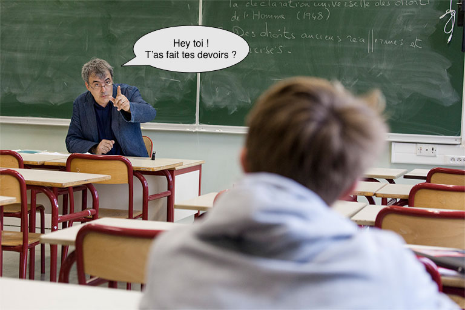
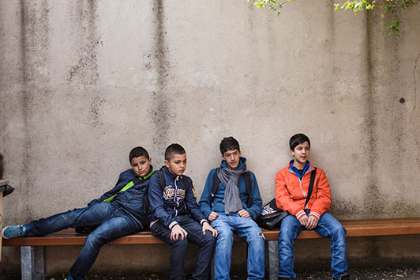

{% set page = { title: "LesJours — Épisode" } %}
{% extends "partials/layout.html" %}

{% block content %}
<article role="main">
	<header class="row">
		<div class="t"></div>
		
		<div class="col-md-left-1 col-md-5">
			<p>Épisode n°16 de l’obsession <a class="alt" href="#">Les années collèges</a></p>
			<h2>Des élèves et des préjugés</h2>
			<p class="lead">Mardi, la classe a reçu l’association Co-exist. Durant deux heures, ils ont planchés sur leurs préjugés racistes et homophobes.</p>
			<time pubdate="2015-09-25T15:57+01:00">25 sept. 2015 • 15h57</time>
			<address>
				<ul class="list-inline">
					<li>Texte <a href="#">Alice Géraud</a></li>
					<li>Photos <a href="#">Simon Lambert</a></li>
				</ul>
			</address>
		</div>
	</header>

	<div class="row">
		<div class="col-md-left-1 col-md-5">
			<p><span class="lettrine">E</span>lle s’applique, liant ses lettres d’un trait appuyé de stylo-bille. À côté du mot <q>arabe</q>, elle a écrit <q>voleur</q>. Une grande partie des élèves de cette classe de troisième a eu la même idée. Sans se concerter. Les mots sont posés sans gêne, provocation ou colère. Son voisin d’en face, un grand garçon souriant, a lui écrit le mot <q>islamiste</q>. Un autre encore a mis <q>violeur</q>. Lundi dernier, ces élèves <a href="#">du collège Gabriel-Péri d’Aubervilliers</a> (Seine-Saint-Denis) ont participé durant 2 heures au programme <a href="#">CoExist</a>, un dispositif de lutte contre le racisme et l’antisémitisme fondé sur le principe de la déconstruction des préjugés.</p>

			<p>Avec ce programme, élaboré en 2003 par une psychosociologue, Joëlle Bordet, et une psychanalyste, <a href="#">Judith Cohen-Solal</a>, CoExist fait une centaine d’interventions par an dans les classes de quatrième, troisième et seconde, à la demande des établissements. Le principe : les élèves se voient remettre une liste d’une vingtaine de mots à côté desquels ils doivent noter des <q>mots associés</q>. Exemple : <q>Si je vous dis « juif », vous pensez à quoi ?</q> Par petits groupes, ils dessinent ensuite au feutre ces mots sur une grande feuille, avant de présenter ce travail à l’ensemble de la classe et d’en discuter collectivement avec les deux médiateurs de CoExist. Leur professeur est présent mais n’intervient pas. <q>Il faut qu’ils se sentent libres de leur parole</q>, explique <a href="#">Judith Cohen-Solal</a>. <q>Notre idée était de ne surtout pas aller farcir la tête de ces jeunes avec ce qu’il faut penser ou pas. Mais de provoquer des discussions et, surtout, un déclic</q>, poursuit la psychanalyste. L’exercice est souvent violent. Il est aussi déconcertant. Parce que, au-delà des préjugés sur l’autre, de la bouche de ces adolescents de banlieue sort surtout le catalogue des préjugés que la société leur renvoie. Et qu’ils ont presque fini par intégrer.</p>

			<aside>
				<p><span>Sans réfléchir,</span> ils se mettent à écrire.</p>
			</aside>

			<figure>
				
				<figcaption>Légende de la photo © Simon Lambert</figcaption>
			</figure>

			<p>Ce jour-là, dans la salle multimédia, les élèves sont vaguement dissipés. Surtout les garçons. Les deux médiatrices de <a href="#">CoExist</a> ont entrepris de les faire asseoir par petits groupes de quatre ou cinq <q>mixtes</q>. Deux-trois gaillards résistent. Ils ne voient pas l’intérêt de se mettre avec des filles. <q>N’importe quoi</q>, peste en boucle <a href="#">Kevin</a>, tout en s’exécutant. Chacun reçoit sa feuille de mots. Et, sans réfléchir, ils se mettent aussitôt à écrire. En face du mot femme, les mots qui reviennent le plus, chez les filles comme chez les garçons, sont : <q>femme battue</q>, <q>violence</q>, <q>soumise</q>. Il y a aussi : <q>mère</q>, <q>foyer</q>. En face d’homme : <q>violent</q>, <q>dangereux</q>, <q>sauvage</q>, <q>puissant</q>. Une des élèves, Fatou, a écrit <q>égale de l’homme</q> pour <q>femme</q>. Cela fait pouffer un garçon. Coline, l’une des deux médiatrices, l’interroge : <q class="commented">Tu penses que les hommes et les femmes ne sont pas égaux ?</q> Il répond <q>non</q> sur le ton de l’évidence, en haussant les épaules. Ses copains acquiescent. <q>On n’est pas pareil quand même</q>, dit l’un. Un autre parle de <q>supériorité</q>.</p>

			<figure>
				<!-- TODO: button expand -->
				
				<figcaption>Si meliora ipsum © Simon Lambert</figcaption>
			</figure>

			<p>Mot suivant : <q>délinquant</q>. Réponses :<q>jeunes de cités</q>, <q>casseurs</q>, <q>banlieue</q>. Quelques lignes en dessous, il y aura justement <q>jeunes de banlieue</q>. Et ils écriront, comme en écho : <q>délinquant</q> ou même <q>sauvage</q>. Pourtant, plus tard, durant le débat, ils parleront de discrimination à l’emploi des jeunes de banlieue. Dénonçant les <q>clichés</q> de la télé. En face de <q>black</q>, ils ont noté <q>racisme</q>, <q>inférieur</q>. L’un d’eux dit <q>voleur</q>. <a href="#">Lydie le reprend : <q>Non, voleurs c’est les Arabes.</q></a> Quelqu’un note que le mot même de <q>black</q> est raciste. <q>C’est les Français qui disent "black".</q> Une fille : <q>Les Noirs aussi sont racistes.</q> Son voisin d’en face la regarde interloqué. Ils sont tous les deux Noirs. La fille évoque le regard des Africains sur les Antillais. Dans le petit groupe, finalement, tout le monde en convient. <q>On est tous le raciste de quelqu’un</q>, philosophe un des garçons. Un autre, fataliste : <q>Même le mot "noir" est négatif dans la langue française. <a href="#">On dit "travail au noir"</a>, "noir c’est noir"…</q> A <q>Africain</q>, reviendra souvent Mali, pays d’origine de beaucoup d’élèves de la classe. Mais aussi, de façon récurrente, <q>pauvre</q>. Un garçon écrira aussi <q>éboueur</q>.</p>

			<blockquote>
				<p>Les Noirs aussi sont racistes</p>
				<span class="author">Kevin Adams</span>
			</blockquote>

			<p>Un mot suscite une réaction unanime : <q>Français</q>, auquel une écrasante majorité appose l’adjectif <q>raciste</q>. Plus rarement <q>blanc</q>, <q>riche</q>, <q>bourgeois</q> ou <q>parisien</q>. Sur les feuilles de papier, un groupe a dessiné les Français à la manière d’un Woody Allen, avec une baguette et un verre de vin. La médiatrice demande qui est français dans cette classe. Tous les élèves lèvent le doigt. <q>Donc vous êtes tous racistes et blancs ?</q> Les adolescents préfèrent, pour se désigner, <q>français de nationalité</q>. Une fille précise, prenant la parole au nom de ses camarades, et sur un ton pédago à destination des médiatrices : <q>Nous, on est d’origines. Les vrais Français n’ont pas d’origines.</q> La médiatrice : <q>Mais si vous n’êtes pas français, vous êtes quoi ?</q> Un jeune garçon raconte qu’il est malien en France, français au Mali. <q>Je suis entre deux chaises</q>, résume-t-il. Puis il tranche, comme pour clore le sujet sur le conflit identitaire : <q>Je suis musulman.</q> Les élèves sont prolixes sur ce thème. Ils parlent de leur ressenti lorsqu’ils vont <q>au bled</q>. <q>Là-bas, ils nous regardent bizarrement, ils pensent qu’on est riches</q>, dit une jeune fille d’origine indienne.</p>

			<figure class="row">
				<div class="col-md-4">
					
				</div>
				<div class="col-md-4">
					
				</div>
				<figcaption>Légende de la photo © Simon Lambert</figcaption>
			</figure>

			<p>Le mot <q>juif</q> se voit accolé <q>radin</q> mais aussi <q>discrimination</q>, <q>guerre</q> et <q>faible</q>. Les croquis des collégiens sur le sujet sont plus explicites sur leur ressentiment. L’un d’eux notamment dessine un juif, sous les traits d'un homme portant une kippa sur la tête et en robe longue <q>comme les imams</q> mais siglée d’une étoile de David bleue. A côté, un <q>jeune</q> se fait arrêter par un policier. L’auteur du dessin légende à l’oral : <q>Il a fait une blague sur le juif et va en prison.</q> La médiatrice l’engage à développer son propos. L’adolescent explique : <q>Si tu fais une blague sur les juifs, c’est direct la justice, alors que sur les Noirs, tu peux faire des blagues racistes. C’est du favoritisme.</q> Toute la classe s’en mêle, et tous les élèves semblent d’accord. Ils parlent de Dieudonné. Ils évoquent, surtout, l’affaire Twitter, dont ils ne connaissent pas les détails mais dont le sens ne leur a pas échappé. Ils ont le sentiment que la loi n’est faite <q>que pour les juifs</q>.</p>

			<aside>
				<p><span>Le racisme</span> est un délit.</p>
			</aside>

			<div class="row">
				<div class="col-md-3">
					<figure>
						
						<figcaption>© Simon Lambert</figcaption>
					</figure>
				</div>
				<div class="col-md-5">
					<p>Noémie, l’une des médiatrices, militante à l’UEJF, l’association qui a porté plainte contre Twitter suite aux messages #unbonjuif, leur explique la violence de ce que signifie <q>un bon juif est un juif mort</q>. Elle leur rappelle, aussi, que le racisme est un délit quelles que soient les catégories de personnes visées. Qu’un tweet <q>un bon Noir est un Noir mort</q>, ne la ferait pas rire non plus. Un élève : <q>Faire des blagues sur les juifs, c’est pas forcément être raciste.</q> La médiatrice lui demande à quoi il pense, par exemple, comme blague. L’adolescent ne se fait pas prier. Il se redresse, éclaircit sa voix et lance : <q>Quelle est la différence entre un juif et une pizza ?</q> <q>Le temps de cuisson.</q> Eclat de rire général. Lorsque le silence revient, la médiatrice demande à la classe à quoi fait référence cette histoire de pizza. Echanges de regards dubitatifs. Seuls deux doigts se lèvent. Une fille dit : <q>C’est quand on mettait les juifs au four.</q> Sur la liste de mots, beaucoup se trouveront dépourvus devant <q>génocide</q>. Certains n’écriront rien en face. Plusieurs choisiront <q>tueur en série</q> ou <q>psychopathe</q>.</p>
				</div>
			</div>

			<figure>
				<video poster="img/episode-poster.jpg" src="videos/episode.mp4"></video>
				<figcaption>Si meliora ipsum © Alice Roberts, Smaïn Belhadj</figcaption>
			</figure>

			<p>Fin.</p>
		</div>
	</div>

	<footer class="container">
		<div class="row">
			<div class="col-md-left-1 col-md-3">
				<p class="sr">Crédits</p>
				<ul>
					<li>Texte <a href="#">Alice Géraud</a></li>
					<li>Photos <a href="#">Simon Lambert</a></li>
					<li>Captation vidéo <a href="#">Alice Roberts</a></li>
					<li>Montage <a href="#">Smaïn Belhadj</a></li>
				</ul>
			</div>

			<div class="col-md-3">
				<p>Les notions clés</p>
				<ul>
					<li><a class="alt2" href="#">Éducation</a></li>
					<li><a class="alt2" href="#">Racisme</a></li>
					<li><a class="alt2" href="#">Intégration</a></li>
				</ul>
			</div>
		</div>

		<div>
			<p class="sr">D’autres épisodes</p>
			<ul>
				<li><a rel="prev" href="#"><span>Épisode n°17<span class="sr"> : </span></span>Le collège que tout le monde voulait éviter</a></li>
				<li><a rel="next" href="#"><span>Épisode n°19<span class="sr"> : </span></span>Kévin pèse dans le game</a></li>
			</ul>
		</div>
	</footer>
	<p style="margin-top: 3000px; margin-bottom: 1em; text-align: center; font-size: 2em;"><span style="font-size: 2em">💥</span><br/>BOOM ! Vous avez cassé l'Internet</p>
	<!-- TODO: board -->
</article>
{% endblock %}